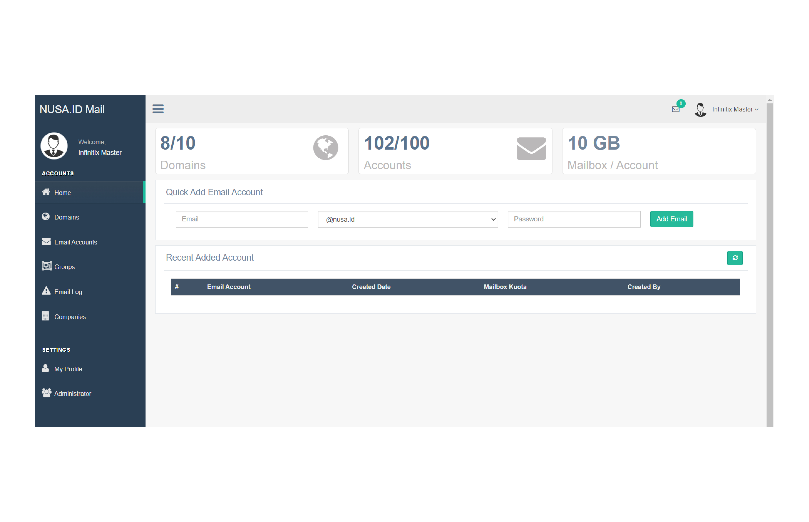
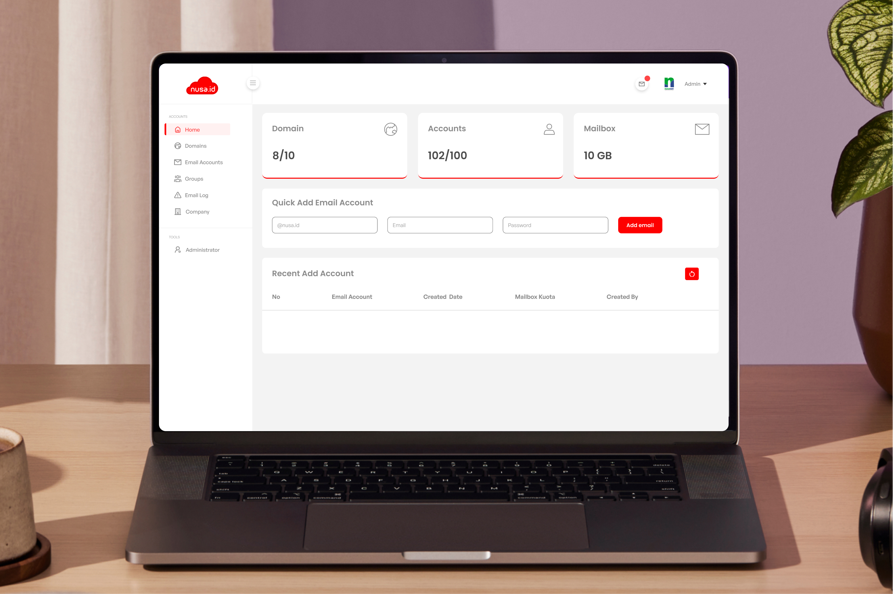

Redesign of Website Nusa Cloud Mail
Visit Figma
This project is a redesign and redevelopment of the old Nusa Cloud Mail website. PT Media Antar Nusa, also known as Nusanet, is a company engaged in providing internet services (ISP) in Indonesia.
The Problem
As an intern, I've been tasked with my first project by the VP Technical, Mr. Wardi. He has instructed me that the Nusaid Mail Cloud website needs an improved content structure and, undoubtedly, a more polished and contemporary design.
Role & Responbility
As a UI/UX Designer, I am responsible for crafting final mockups and presenting the outcomes to the VP Technical during meetings.
Final Result
Inspiration
First, I search some inspiration from the internet before making mockups. Most of these websites have similar concept designs. I found some great visualizations about dashboard design and ended up using some layout and design approaches from these inspirations.

Mockups & Prototypes
Then after exploring several inspirations, here is the final result of my mockups and prototypes creation.
